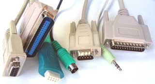
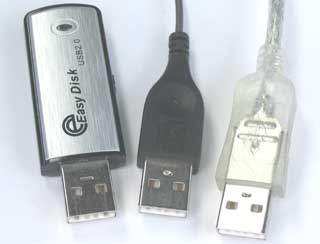
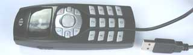
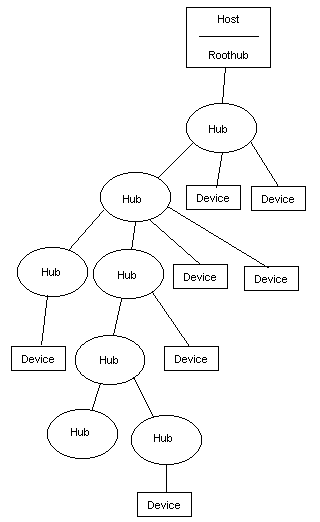
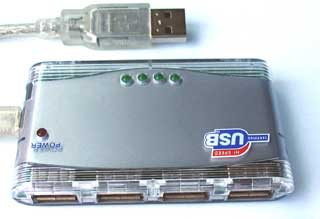

| Index |
| Part 1 |
| Part 2 |
| Part 3 |
| Part 4 |
| Part 5 |
| Part 6 |
| Part 7 |
| Links |
Part 1 - Introduction to USB |
|
|
||||||||||
| This series of articles on USB is being actively expanded. If you find the information useful, you may wish to come back to this page in the future to check for newly added parts. | ||||||||||
General IntroductionThe Universal Serial Bus (USB) is a specification developed by Compaq, Intel, Microsoft and NEC, joined later by Hewlett-Packard, Lucent and Philips. These companies formed the USB Implementers Forum, Inc as a non-profit corporation to publish the specifications and organise further development in USB. |
 |
|||||||||
| The aim of the USB-IF was to find a solution to the mixture of connection methods to the PC, in use at the time. We had serial ports, parallel ports, keyboard and mouse connections, joystick ports, midi ports and so on. And none of these satisfied the basic requirements of plug-and-play. Additionally many of these ports made use of a limited pool of PC resources, such as Hardware Interrupts, and DMA channels. |
 |
|||||||||
| So the USB was developed as a new means to connect a large number of devices to the PC, and eventually to replace the 'legacy' ports. It was designed not to require specific Interrupt or DMA resources, and also to be 'hot-pluggable'. It was important that no special user-knowledge would be required to install a new device, and all devices would be distinguishable from all other devices, such that the correct driver software was always automatically used. |
 |
|||||||||
| It may be apparent that, to make a system which is so user-friendly is going to mean a lot of work behind the scenes for the developer. | ||||||||||
Data SpeedsThe USB specification defines three data speeds, shown to the right. These speeds are the fundamental clocking rates of the system, and as such do not represent possible throughput, which will always be lower as the result of the protocol overheads. |
|
|||||||||
Low SpeedThis was intended for cheap, low data rate devices like mice. The low speed captive cable is thinner and more flexible than that required for full and high speed. Full SpeedThis was originally specified for all other devices. High SpeedThe high speed additions to the specification were introduced in USB 2.0 as a response to the higher speed of Firewire. |
 |
|||||||||
SpecificationThe current specification is 'Universal Serial Bus Specification, Revision 2'. This can be obtained free of charge on the USB-IF website. Please note that this specification replaces the earlier 1.0 and 1.1 Specifications, which should no longer be used. The Revision 2.0 specification covers all three data speeds, and maintains backwards compatibility. USB 2.0 does NOT mean High Speed. Click here for an overview of the specification. |
|
|||||||||
ArchitectureThe USB is based on a so-called 'tiered star topology' in which there is a single host controller and up to 127 'slave' devices. The host controller is connected to a hub, integrated within the PC, which allows a number of attachment points (often loosely referred to as ports). A further hub may be plugged into each of these attachment points, and so on. However there are limitations on this expansion. As stated above a maximum of 127 devices (including hubs) may be connected. This is because the address field in a packet is 7 bits long, and the address 0 cannot be used as it has special significance. (In most systems the bus would be running out of bandwidth, or other resources, long before the 127 devices was reached.) A device can be plugged into a hub, and that hub can be plugged into another hub and so on. However the maximum number of tiers permitted is six. The length of any cable is limited to 5 metres. This limitation is expressed in the specification in terms of cable delays etc, but 5 metres can be taken as the practical consequence of the specification. This means that a device cannot be further than 30 metres from the PC, and even to achieve that will involve 5 external hubs, of which at least 2 will need to be self-powered. So the USB is intended as a bus for devices near to the PC. For applications requiring distance from the PC, another form of connection is needed, such as Ethernet. |
  Typical 4-port Hub |
|||||||||
Host is MasterAll communications on this bus are initiated by the host. This means, for example, that there can be no communication directly between USB devices. A device cannot initiate a transfer, but must wait to be asked to transfer data by the host. The only exception to this is when a device has been put into 'suspend' (a low power state) by the host then the device can signal a 'remote wakeup'. |
|
|||||||||
On-The-GoAn extension to the USB specification has been defined, to allow a device to also become a limited role host. This specification is known as On-The-Go. A later part is planned, to cover this specication in detail. |
||||||||||
SummaryWe have examined the USB specification from the perspective of the user. |
||||||||||
Coming up...Next we will look at the electrical side of things, including cables and connectors. |
Forward | |||||||||
|
Copyright
© 2006-2008 MQP Electronics Ltd
|
||||||||||